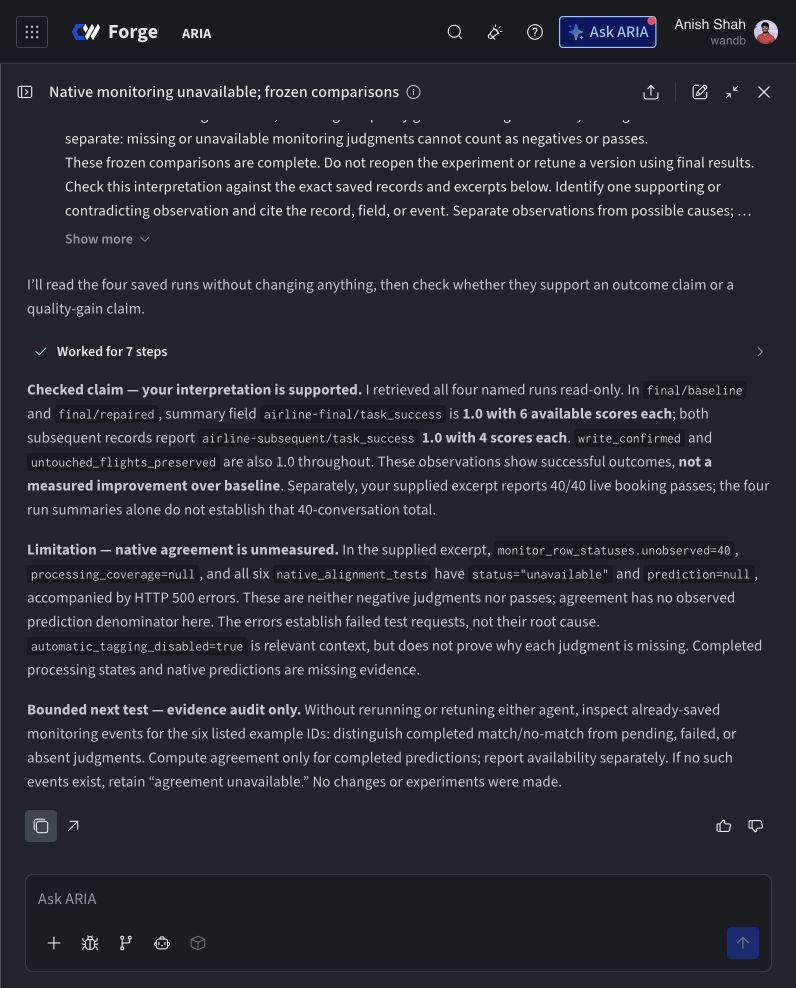
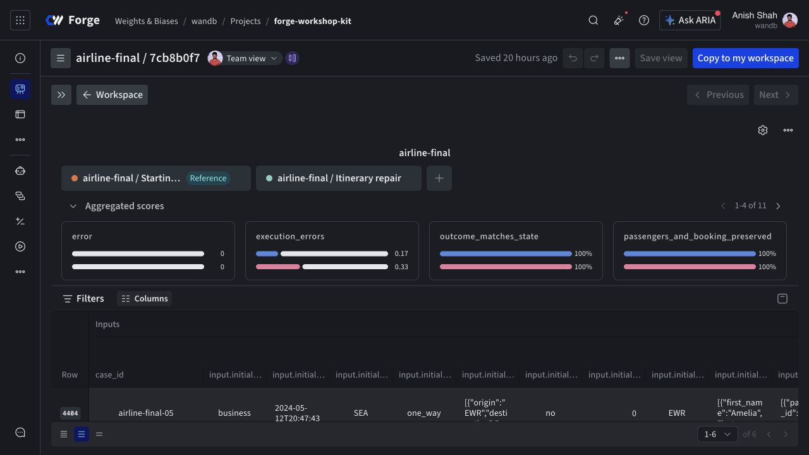

Airline Monitoring / Check our conclusion
Recorded instructor investigation. These are saved instructor records, not the outcome of an unexecuted participant edit.
Exact final and subsequent run URLs plus saved qualification excerpts; no native attachment. ARIA retrieved the four named run summaries read-only and verified six final and four subsequent scores per version. The 40-conversation total, absent monitor rows, and unavailable Alignment tests came from supplied qualification excerpts, not those four run summaries. Its actual next suggestion is an audit of existing monitoring events, without sending new traffic or changing a tag.
Open the actual ARIA conversation · Check the supplied source values offline
Exact submitted prompt
I am preparing an instructor-recorded airline workshop investigation. My interpretation: The live qualification shows correct booking outcomes, not an agent-quality gain. Native tag availability and agreement are separate: missing or unavailable monitoring judgments cannot count as negatives or passes.
These frozen comparisons are complete. Do not reopen the experiment or retune a version using final results.
Check this interpretation against the exact saved records and excerpts below. Identify one supporting or contradicting observation and cite the record, field, or event. Separate observations from possible causes; state missing evidence. Do not change code or settings, launch experiments, update project memory, or create automations. Analysis only.
Records: [{"label":"final/baseline","run_url":"https://forge.coreweave.com/wandb/wandb/forge-workshop-kit/runs/6e61f9742d2bd73de556495259b40011"},{"label":"final/repaired","run_url":"https://forge.coreweave.com/wandb/wandb/forge-workshop-kit/runs/b76342ec86c76151084f51ba07c330ec"},{"label":"subsequent/baseline","run_url":"https://forge.coreweave.com/wandb/wandb/forge-workshop-kit/runs/c786194dbc62194080e2c8f713e82095"},{"label":"subsequent/repaired","run_url":"https://forge.coreweave.com/wandb/wandb/forge-workshop-kit/runs/14415e9202dc1ec0c6df978b7be961c7"}]
Saved evidence excerpts: {"all_live_conversations":40,"all_live_booking_passes":40,"direct_model_cost":{"observed_usd":0.02401506,"bounded_unknown_usd":0,"inflight_usd":0},"native_monitoring":{"tag_id":"01a1dbfc-34e0-7540-a690-0fb598377ae6","read_at":1794692799.448919,"processing_coverage":null,"cost_usd":null,"native_billing":"Native tag judging is outside the notebook inference allowance."},"monitor_row_statuses":{"unobserved":40},"native_alignment_tests":[{"id":"baa6338f12d769acf71d0e3aa87bfb71c3dd03c1711d3488f01910cd4b505c58","status":"unavailable","prediction":null,"error":"Server error '500 Internal Server Error' for url 'https://forge.coreweave.com/api/pulse/tags/01a1dbfc-34e0-7540-a690-0fb598377ae6/test?example_id=01a1dbfe-4603-7cf7-ab2f-f03951d7041a'\nFor more information check: https://developer.mozilla.or"},{"id":"128c56ff7b4588182a27c20bf62880bbcfd0405e98ba67f6faf68df4c7c12203","status":"unavailable","prediction":null,"error":"Server error '500 Internal Server Error' for url 'https://forge.coreweave.com/api/pulse/tags/01a1dbfc-34e0-7540-a690-0fb598377ae6/test?example_id=01a1dbfe-4ab5-7a3a-847b-4380bbfc08e2'\nFor more information check: https://developer.mozilla.or"},{"id":"bdc94458c6dda5c9ca3a339c6313ad32f764d1fa353b607db13acc0ec1b6814c","status":"unavailable","prediction":null,"error":"Server error '500 Internal Server Error' for url 'https://forge.coreweave.com/api/pulse/tags/01a1dbfc-34e0-7540-a690-0fb598377ae6/test?example_id=01a1dbfe-4eb9-7684-8788-75f690fef09d'\nFor more information check: https://developer.mozilla.or"},{"id":"1cf803bdbb2d07d03f6ff70b791436751ae4e428c015a26fe5eec3d3316c4bc6","status":"unavailable","prediction":null,"error":"Server error '500 Internal Server Error' for url 'https://forge.coreweave.com/api/pulse/tags/01a1dbfc-34e0-7540-a690-0fb598377ae6/test?example_id=01a1dbfe-53a9-7175-b8fa-248d56eed23f'\nFor more information check: https://developer.mozilla.or"},{"id":"ad1cace3938de0714a2319cfc53ab0d6b5f97b2808ffe7a07b45758147a4f9b5","status":"unavailable","prediction":null,"error":"Server error '500 Internal Server Error' for url 'https://forge.coreweave.com/api/pulse/tags/01a1dbfc-34e0-7540-a690-0fb598377ae6/test?example_id=01a1dbfe-5813-703a-b290-d7f9c08455c7'\nFor more information check: https://developer.mozilla.or"},{"id":"922c15de3e04c506666694501511a2d0d04e0037e67df7cc10fcaa840e543b48","status":"unavailable","prediction":null,"error":"Server error '500 Internal Server Error' for url 'https://forge.coreweave.com/api/pulse/tags/01a1dbfc-34e0-7540-a690-0fb598377ae6/test?example_id=01a1dbfe-5c7e-79e5-950a-247cb5304e8f'\nFor more information check: https://developer.mozilla.or"}],"automatic_tagging_disabled":true,"scope":"All 40 recorded live conversations passed deterministic booking checks. Controlled calibration incidents are tool-only drills, not spontaneous model failures. An absent assignment cannot distinguish a pending turn from completed no-match."}
Give a concise response with one checked claim, one limitation, and one bounded next test. If you cannot read a linked record, say so and base any interpretation explicitly on the supplied excerpt.
Please retrieve the named records read-only if the available tools support it. If they do not, state that limitation. Keep the response under 220 words.Actual ARIA response
Instructor citation check
supported: Both versions pass the six final requests and four subsequent requests; this does not show an agent-quality gain or measured native monitor agreement.
Saved qualification comparisons and live execution records match the native summaries: task_success=1.0 for six final cases and four subsequent cases per version. The local qualification separately records 40 booking passes, 40 unobserved monitoring rows, null processing coverage, and six unavailable Alignment tests. Missing predictions cannot supply a monitor-agreement denominator. The native screenshot verifies final booking outcomes only; it does not establish native tag agreement or the total of 40.
Open the checked record in Forge


- Execution errors
- Booking checks: both 100%